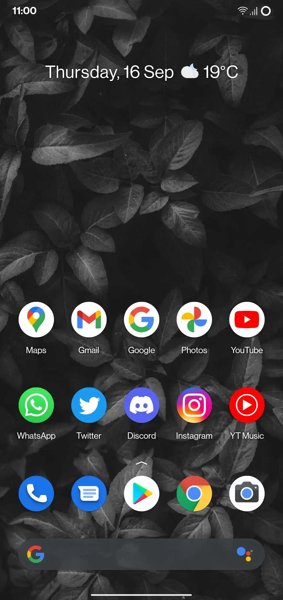

Home
Wiki
conquerOS
A Simple yet powerful CAF Based ROM with redesigned UI to give a fresh and unique look.
Download
Features
~ Redesigned UI ~
~ Customizable ~
~ Simple ~
~ Optimized for Snapdragon devices ~
Screenshots

Previous
Next